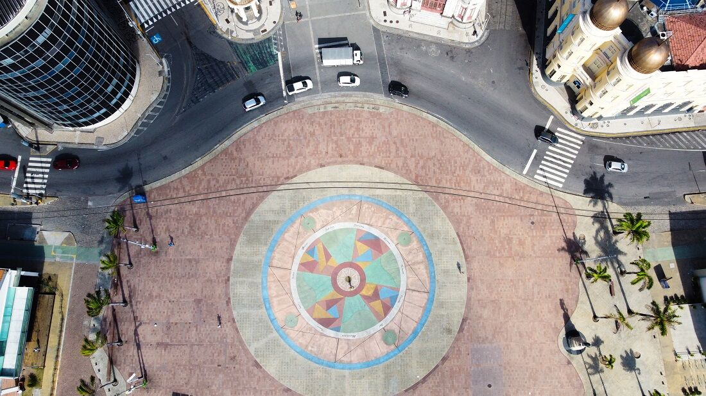

Marco Zero e seus pontos turísticos
Praça do Marco Zero
Na Praça do Marco Zero em Recife, você encontra um espaço cultural animado. É um local onde ocorrem frequentemente apresentações culturais, como danças folclóricas e música ao vivo. Além disso, oferece uma vista panorâmica do Rio Capibaribe, sendo um ponto de encontro popular tanto para turistas quanto para moradores locais.
Cais da Alfândega

Uma área culturalmente aceita que oferece uma variedade de opções de lazer, como lojas, galerias de arte, bares e restaurantes. É também um ponto de partida para passeios de barco pelo Rio Capibaribe, proporcionando uma experiência única.